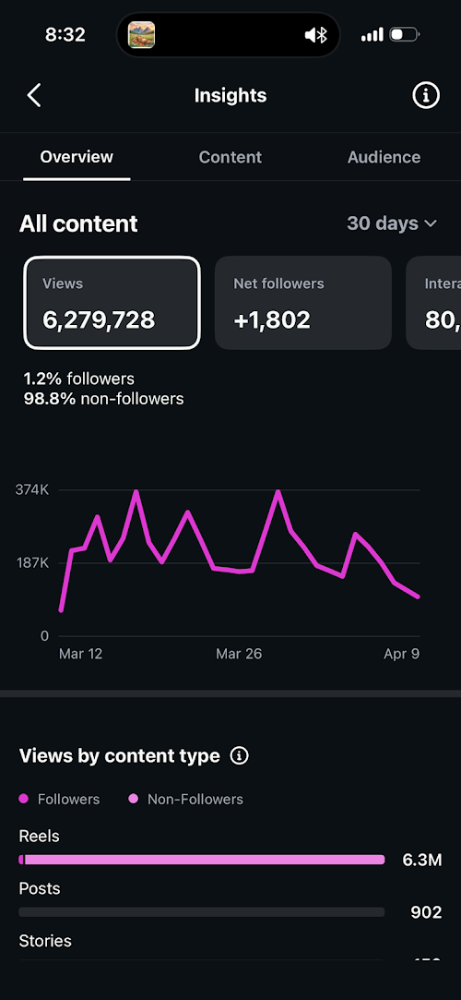
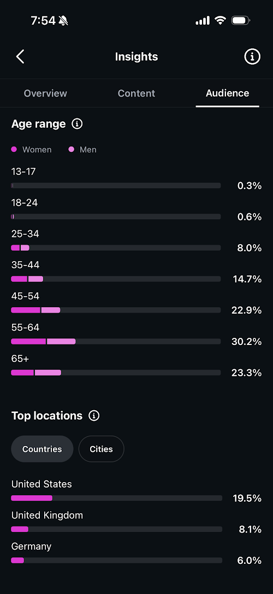
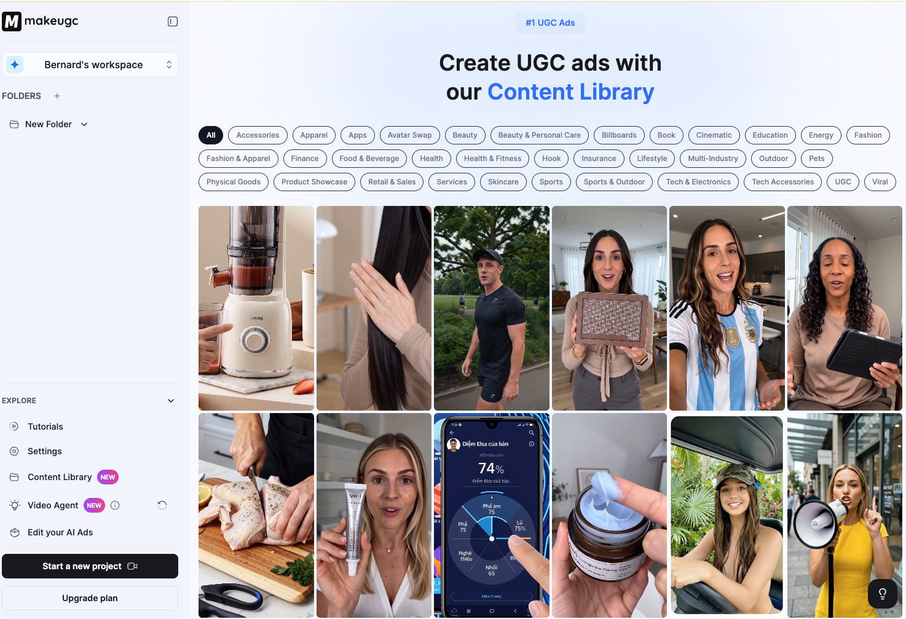

Rise of AI Influencers & Fall of Trust on the Internet

A man in orange robes sits cross-legged before a Buddhist altar. He speaks softly about Qi, inner harmony, and the path to balance. His videos are beautifully shot. His voice is calm and measured. 2.6 million people follow him on Instagram. He has generated over $300,000 in revenue selling ebooks and digital wellness products. His name is Yang Mun. He doesn't exist.
Every frame of every video was generated by AI. The face, the voice, the robes, the altar — all of it synthetic. Built by a solo creator in Israel using ChatGPT, ElevenLabs, HeyGen, and Google's video generation tools. SynthID, Google's own AI detector, confirmed it. And yet millions of people watched, believed, and paid money to learn from a person who was never real.
This isn't a curiosity. This is the new default.
The Monk Who Wasn't Real
Yang Mun gained 2.5 million followers on Instagram in three months. Not years — months. He crossed platforms to TikTok, where he accumulated hundreds of thousands more. Across all platforms, his content generated over 400 million organic views.
The playbook was simple. Take a character archetype that projects trust and wisdom — a serene monk in traditional robes — and have him deliver calming, shareable content about wellness, balance, and Chinese medicine. The kind of content that performs well algorithmically because it gets saves and shares from people who genuinely find it helpful.
Then monetize. Yang Mun's creator charged $50/month for wellness classes and sold digital products. $300K in profit within 90 days. One person. No staff. No overhead. Just AI tools that anyone can access.
The creator, Shalev Hani, eventually came forward and described himself as a "Digital Creator & AI Storyteller." He didn't see Yang Mun as a scam. He saw it as a new kind of media. And that framing — content as fiction, character as product — is exactly what makes this so hard to regulate and so easy to abuse.
Who Is Actually Fooled
Here's the part that keeps me up at night.
I run tabiji.ai, an AI-powered travel content account on Instagram. We publish AI-generated travel reels — inspiration, tips, cultural gotchas. In a 30-day window, our content reached 6.3 million views, gained 1,800 new followers, and 98.8% of our audience were non-followers discovering us through the algorithm.


Look at the audience demographics. 76.4% of our audience is 45 years old or older. The single largest cohort is 55-64, at 30.2%. People aged 65+ make up 23.3%. Meanwhile, the under-25 demographic — the generation that grew up with photo filters, deepfakes, and AI tools — accounts for less than 1%.
The algorithm is actively funneling AI-generated content to the people least equipped to identify it as synthetic. Not because the algorithm is malicious. Because older demographics engage with this content at higher rates — they save it, share it, comment on it — and the algorithm optimizes for engagement above all else.
Younger generations have developed a kind of digital immune system. They grew up questioning whether images were photoshopped, whether accounts were bots, whether influencers were authentic. They're not immune to AI deception, but they're more skeptical by default. Older generations didn't develop that muscle. They came of age in an era where a photo was proof and a video was truth. That assumption is now a vulnerability.
The Tools Are Too Good Now
A year ago, AI-generated video had telltale signs. Warped hands. Uncanny eye movement. Audio that felt slightly off. You could spot it if you were paying attention.
That grace period is over.
Google's Veo 3.1 now generates 4K video with native audio, vertical output optimized for Shorts and Reels, and scene extension technology that can produce continuous narratives beyond 60 seconds. Anyone with a Google account gets 10 free generations per month. ByteDance's Seedance 2.0 does phoneme-level lip sync in 8+ languages with multi-shot narrative control from a single prompt. It's already integrated into CapCut — the editing app that half of TikTok uses.
These aren't research demos. They're production tools. Available today. To anyone.
The gap between "AI-generated" and "real footage" has collapsed so fast that the phrase "I can tell it's AI" is becoming a dated boast. You could tell in 2024. You probably can't tell now — not reliably, not at scroll speed, and certainly not if you're a 58-year-old scrolling Instagram before bed.
The Commercialization of Fake People
Yang Mun is the cautionary tale. But the commercialization of synthetic people is already mainstream — it's just wearing a different label.

Platforms like MakeUGC offer a content library of AI-generated people — realistic avatars that can be dropped into UGC-style ad creatives. Pick a face, pick a niche (fitness, skincare, tech, food & beverage), and generate a video of a "real person" enthusiastically reviewing a product they've never touched. The faces are diverse. The settings look like real apartments and kitchens. The delivery mimics the casual, authentic feel that makes UGC ads perform.
This is the legitimate end of the spectrum. Brands knowingly using AI avatars for advertising, with (theoretically) clear commercial intent. The economics are compelling — why hire 10 UGC creators at $200-500 per clip when you can generate unlimited variations for a fraction of the cost?
But the line between "AI avatar for ads" and "AI avatar pretending to be a real influencer" is thinner than anyone wants to admit. The same tools that let a DTC brand generate a product review can let a bad actor create a fake wellness guru, a fake fitness transformation, or a fake financial advisor. The technology is identical. The intent is the only difference. And intent is invisible on a platform that treats all content the same.
What's Coming Is Worse
Yang Mun sold ebooks. That's relatively harmless in the spectrum of what's possible. Here's what I expect to see in the next 12 months:
Fake transformation content. Someone creates an AI avatar of a slightly overweight person. Over 90 days, they post a "journey" — workout clips, meal prep videos, weigh-in updates — all AI-generated. On day 90, the avatar looks incredible. Then comes the pitch: a supplement, a program, a paid community. The entire transformation was synthetic, but the testimonials in the comments are real people who believed it and bought the product.
Fake financial advisors. AI-generated characters giving investment advice, promoting crypto projects, or selling courses on trading. They'll have professional-looking offices, articulate delivery, and consistent posting schedules. Some will run for months before anyone questions whether the person exists.
Fake local experts. AI "locals" recommending restaurants, services, and businesses in specific cities — accounts that look like genuine community members but are actually affiliate operations. This one is especially insidious because local trust is harder to verify and easier to exploit.
The common thread: each of these exploits the gap between what AI can produce and what people can detect. And each targets the same vulnerable demographics — older users, less tech-savvy users, people who still trust that a face on a screen belongs to a real person.
Platforms Won't Fix This
Social media platforms know AI content is flooding their feeds. They're not stupid. They have internal detection tools, they can see the metadata, they know which accounts are using AI generation APIs.
They're choosing not to act aggressively. And the reason is simple: AI content drives engagement.
Some of the highest-performing content on Instagram and TikTok right now is AI-generated. It's visually polished, it's optimized for the format, and it's produced at a volume that human creators can't match. From a platform's perspective, AI content keeps users scrolling. It fills the feed. It generates ad impressions. Cracking down on AI content means cracking down on engagement — and no publicly traded social media company is going to voluntarily reduce its core metric.
Mandatory labeling is the obvious first step. If an account is posting AI-generated content, it should be labeled. Not buried in a setting — visible, on every post, like the "Sponsored" label on ads. But platforms won't implement this voluntarily because labeling reduces engagement. The moment users see "AI-generated" on a post, a percentage of them will scroll past. That's a direct hit to watch time and impressions.
This will only happen when governments force it. And governments move slowly, especially on technology regulation. The EU will probably get there first. The US will lag. And in the meantime, the volume of unlabeled synthetic content will grow exponentially.
The New Affiliate Marketing
I need to be honest about my position here. I'm not an outsider looking in. I run AI content operations. I use tools like MakeUGC. I've written about why the future is synthetic. I'm part of this ecosystem, and that's exactly why I'm sounding the alarm.
There is a real, legitimate opportunity happening right now. SEO is dying as a distribution channel — AI overviews, zero-click searches, and platform consolidation are hollowing it out. Affiliate marketing is shifting to video, and video is orders of magnitude more complex than writing a blog post. There are more dials to turn — text-to-video models, formats, hooks, pacing, music, aspect ratios — which means the skill ceiling is higher and the window for differentiation is wider.
A generation of Gen Z creators is already capitalizing on this. They're building AI-powered content operations, testing models like Veo 3.1 and Seedance 2.0, learning what formats perform, and treating AI video production as a legitimate craft. For them, this is what SEO blogging was in 2015 — a gold rush with real returns for people willing to learn the tools.
That window is real. But so is the potential for harm. And the people who treat this as a pure arbitrage play — no disclosure, no ethics, no concern for who gets hurt — are the ones who will eventually get this entire space regulated into the ground for everyone.
Fake Until Proven Real
The default assumption on the internet used to be that content was real unless you had reason to doubt it. A photo was a photo. A video was a video. A person speaking to camera was a person speaking to camera.
That assumption has flipped. We are entering an era where the rational default is suspicion. Everything is fake until proven real. And the infrastructure to prove things are real — verification systems, provenance tracking, content authentication — doesn't exist yet at any meaningful scale.
We're in the gap. The tools to create synthetic content are here, they're cheap, and they're improving every month. The tools to detect, label, and regulate synthetic content are barely in prototype. The people most vulnerable to deception are the ones consuming the most content. And the platforms that could intervene have financial incentives not to.
I don't have a clean solution. But I know what needs to happen:
- Mandatory labeling. Platforms should require accounts to disclose when content is AI-generated. Not optional. Not opt-in. Required, with visible labels on every post.
- Algorithmic accountability. If your algorithm is disproportionately serving synthetic content to vulnerable demographics, that should be a regulatory concern.
- Media literacy at scale. We teach kids about stranger danger. We need the equivalent for synthetic media — and we need it aimed at adults, not just children.
- Platform liability. If a fake AI influencer defrauds people on your platform and you had the tools to detect it but chose not to, you should bear some responsibility.
None of this will happen fast enough. Yang Mun already happened. The next Yang Mun is already being built. And the one after that will be harder to detect, more sophisticated in its monetization, and targeted at people who have no idea they're interacting with a fiction.
The internet isn't getting more trustworthy. It's getting less. And the people who understand that — whether they're building with AI or trying to protect others from it — have a responsibility to say it out loud.
Even when they're part of the problem.